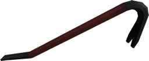
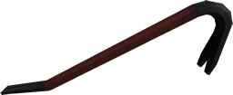

Start up guide
Introduction
Sven Co-op is a co-operative based game based around Valve Software's Half-Life. In this game players must work together against computer controlled enemies and solve puzzles as a team.
It is ideal that you are at least familiar with Half-Life and its controls, and it is recommended that you have completed Half-Life's hazard course.
While Sven Co-op is similar to Half-Life with similar weapons, monsters, and characters, the difficulty has been increased to suit team play.
Sven Co-op's levels are set as missions and are generally separate from each other. Many missions span several maps and some are collected together in a series. The aim of most levels is to reach the end or to achieve an objective -- obtaining a high score is not essential to beat a level, its just part of the fun.
Setting up Sven Co-op
Here is how to install Sven Co-op:
- Install Steam
 and register an account if you haven't already.
and register an account if you haven't already. - Launch Steam and log in.
- Visit the Sven Co-op store page so you can activate Sven Co-op on your Steam account.
- In the main Steam screen click Library.
- Scroll down the list of available games until you see Sven Co-op.
- Double-click the package to install it.
- Follow the on-screen installation.
Once completed Sven Co-op will appear in your Steam library. Simply double-click it to start.
Before playing you should set your game options. To do simply select Options from the title screen, then go through the tabs until you're happy. Be sure to check out what the controls are.
Once you're ready click Find servers to find a game server to play on.
The players
|
Your team mates in Sven Co-op (other players attempting the same mission) will commonly look similar to the figure on the right, though there are many character models to choose from. All players have exactly the same abilities as you, and can fight just as hard. It is essential that you co-operate with your team mates, as most Sven Co-op levels are a lot harder than the original Half-Life missions with stronger enemies and more combat. You may also need to work with your team mates to solve puzzles or to activate certain buttons. Communication with others helps ensure success, so before you play check your key setting for the Chat Message command (default Y) - better yet, if you have a microphone handy, use the control options menu to set a key for Use Voice Communication and hold the key in game to talk to team mates. Remember to use voice communication in respect of other players hearing!
Some players will have icons beside them on the score board. This denotes players who are donors or members of the Sven Co-op team as follows:
On the far right of the score board you may find players with the server administrator icon |
 |
The monsters
|
Stopping you from achieving your objectives are the computer controlled monsters (AI enemies). These appear in greater numbers than players and are a lot smarter than they were the original Half-Life, with new tactics and abilities. In most cases, monsters are hostile and should be killed as soon as possible. Occasionally however, you will meet friendly (player allied) monsters, who can follow you and attack your enemies (more on that later). Sometimes these monsters may be similar to generic Half-Life monsters, but in other cases they may be stronger, faster or have new attacks. When playing a new map, you can never be certain of what you might find yourself up against.
|
 |
The allies
|
Not all computer controlled monsters are out to kill you -- some monsters will work with you against hostile monsters. To identify these allies, use the in game Friend or Foe system. Simply point your cross hairs at a monster then information will show up in the bottom-left corner of your screen. If the monster is going to attack you the information will show up red. If it is green the monster is an ally and will help you. Real players will show up in blue. The Friend or Foe system also provides useful information about a monster or player's health and name. Certain maps may have disabled this feature. Typically this is enabled, though a map author can control this feature for their map.
|
 |
The weapons / equipment
|
Upon respawning or joining the game players are normally given a preset range of equipment and ammo. The type and amount varies between maps. It is also possible to pick up new weapons, ammo, and equipment in a map. The weapons you can pick up are generally better than your starting equipment and you should keep an eye out for them. Players have the ability to share weapons and ammo with team mates using the drop weapon/ammo keys definable in the control options, so make sure to share in difficult scenarios to help with your chances for survival.
|
   |
The music
Thanks to the new FMod sound library from Firelight Technologies more than just MP3 files can be played using the in-game music player.
Use the included play list editor tool "playlist.exe" to easily create a list of music files or import a play list to use in the in-game player.
In case you're having trouble running this tool, all you should need is Microsoft .NET Framework 3.5. This is available free of charge for all Windows users:
- via the Windows Update website for Windows 2000, XP, and 2003 users.
- via the Windows Update tool (Start » All Programs) for Windows Vista, 2008, 7, 2008 R2, 8, and 8.1 users.
- via the Programs and Features control panel for Windows 10 users.